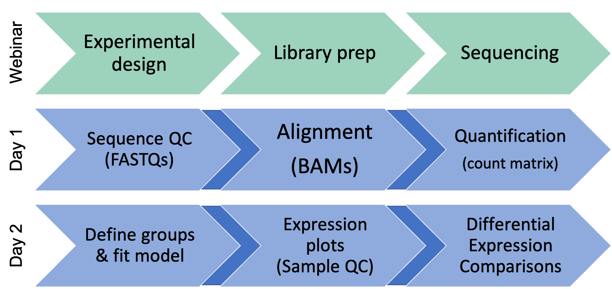

Code of Conduct
Be kind to others. Do not insult or put down others. Behave professionally. Remember that harassment and sexist, racist, or exclusionary jokes are not appropriate for the workshop.
All communication should be appropriate for a professional audience including people of many different backgrounds. Sexual language and imagery is not appropriate.
The Bioinformatics Core is dedicated to providing a harassment-free community for everyone, regardless of gender, sexual orientation, gender identity and expression, disability, physical appearance, body size, race, or religion. We do not tolerate harassment of participants in any form.
Thank you for helping make this a welcoming, friendly community for all.
If you have questions about the CoC please reach out to the hosts during the workshop, or email us at bioinformatics-workshops@umich.edu.
To report a CoC incident/concern, please email Chris Gates (Bioinformatics Core, Managing Director) at cgates@umich.edu or contact the University of Michigan Office of Institutional Equity at institutional.equity@umich.edu.
Using Zoom and Slack
- We will be recording this session. Recordings will be available to participants
following the workshop.

Zoom controls are at the bottom of the Zoom window: 
To minimize distractions, we encourage participants to keep their audio muted (unless actively asking a question).
To maximize engagement, we encourage participants to keep their video on.
Slack works better than Zoom’s Chat function so avoid Zoom Chat for now.
You can enable transcription subtitles for your view.
We will be using Breakout Rooms occasionally for ad-hoc 1-1 helper support. We will review this in detail together in a few minutes.
Zoom’s “non-verbal controls” are a useful way to interact
- Depending on your version of Zoom you can access these either
- in the Reactions button on you main Zoom window
- at the bottom of the Participant pane
- Raise Hand to request clarification or ask a question. (Same an in-person workshop.)
- Gray chevron [Slow down / Give me a moment] when you need more time to complete an exercise or you would like the instructor to repeat an idea
- Instructors will use Green check and Red X to poll the group at checkpoints along the way.

- Slack can be used to communicate to the group or to individuals and has a few features/behaviors that we prefer over Zoom’s Chat functionality.
- Slack messages will be posted to the 2021-august-rnaseq-demystified channel.
Click on the channel in the left pane (1) to select this channel.
- You can type in the message field (2); click send (3) to post your message to everyone.
- Helpers will respond in a Slack thread (or pose the question to the instructor)
- You can respond in a message thread by hovering over a message to trigger the message menu and clicking the speech bubble (4).
Arranging your screens
It is important that you can see:
- Zoom (instructor’s shared screen + reactions)
- Slack
- Lesson plan web page
- Your terminal/command window (day 1) or R/Studio (day 2)

Review of Key communication patterns
| “I have an urgent question” |
 |
Post a question |
| “I have a general question” |
|
Post a question |
| “I’m stuck / I need a hand” |
|
Post a note |
| Instructor check-in |
 -or- -or- |
|
| Instructor Slack question |
|
Respond in Slack thread |
Warm-up Exercises
Use Zoom non-verbals
- Everyone use Zoom to raise your hand.
- Using Zoom, give me a green-check if you feel like you understand communication patterns or red-X if you need clarification.
Using Zoom Breakout Rooms
- Zoom: Click Breakout Rooms
- Find the room corresponding to the first letter of your first name
- Hover over the number to the right and click Join.
- When you have completed introductions, you can leave the breakout room to rejoin the main room.

Responding in Slack thread
What is one thing you hope to learn today or tomorrow?
Workshop goals and topics
By the end of the workshop, attendees will be able to
- Transform raw sequencing data into annotated differential expression values using a suite of open-source tools.
- Identify common data quality problems and understand their impact and possible mitigations
- Visualize differential expression data in RStudio plots.
This workshop is targeted toward researchers who would like to be able to run RNA-Seq analysis on their own. It assumes a very basic familiarity with genetics, the command line, and R or R-Studio.
The first day will be a mix of hands-on content and lecture-style components, while the second day will primarily be a hands-on experience.
Please let us know if there is anything we can do to improve the workshop experience.
Our purpose is not to be exhaustive, there is a lot that we cannot cover in the allotted time, and we don’t expect anyone to be an expert at the end of the workshop. But we hope you will have a familiarity with key concepts, data types, tools, and how they all connect to one another in the service of a biological question.
Workshop topics at a glance

Any questions?
This workshop content is licensed under a Creative Commons Attribution 4 License.
The workshop Code of Conduct has been adapted the NumFocus Code of Conduct (https://numfocus.org/code-of-conduct) which itself draws frin from numerous sources, including the Geek Feminism wiki, created by the Ada Initiative and other volunteers, which is under a Creative Commons Zero license, the Contributor Covenant version 1.2.0, the Bokeh Code of Conduct, the SciPy Code of Conduct, the Carpentries Code of Conduct, and the NeurIPS Code of Conduct.
Sections of the workshop content have been adapted and extended from materials created by the Harvard Chan Bioinformatics Core (HBC). These are open access materials distributed under the terms of the Creative Commons Attribution license (CC BY 4.0), which permits unrestricted use, distribution, and reproduction in any medium, provided the original author and source are credited.
LS0tCnRpdGxlOiAiV2VsY29tZSB0byBSTkEtc2VxIERlbXlzdGlmaWVkIgphdXRob3I6ICJVTSBCaW9pbmZvcm1hdGljcyBDb3JlIFdvcmtzaG9wIFRlYW0iCm91dHB1dDoKICAgICAgICBodG1sX2RvY3VtZW50OgogICAgICAgICAgICB0aGVtZTogcGFwZXIKICAgICAgICAgICAgdG9jOiB0cnVlCiAgICAgICAgICAgIHRvY19kZXB0aDogNAogICAgICAgICAgICB0b2NfZmxvYXQ6IHRydWUKICAgICAgICAgICAgbnVtYmVyX3NlY3Rpb25zOiB0cnVlCiAgICAgICAgICAgIGZpZ19jYXB0aW9uOiB0cnVlCiAgICAgICAgICAgIG1hcmtkb3duOiBHRk0KICAgICAgICAgICAgY29kZV9kb3dubG9hZDogdHJ1ZQotLS0KCjxzdHlsZSB0eXBlPSJ0ZXh0L2NzcyI+Cgpib2R5LCB0ZCB7CiAgIGZvbnQtc2l6ZTogMThweDsKfQpjb2RlLnJ7CiAgZm9udC1zaXplOiAxMnB4Owp9CnByZSB7CiAgZm9udC1zaXplOiAxMnB4Cn0KPC9zdHlsZT4KCiMgV2VsY29tZQoKIyMgQWJvdXQgdGhlIEJpb2luZm9ybWF0aWNzIENvcmUKCi0gVGhlIFVuaXZlcnNpdHkgb2YgTWljaGlnYW4gQmlvaW5mb3JtYXRpY3MgQ29yZSBpcyBhIHRlYW0gb2YgYW5hbHlzdHMgdGhhdCBoZWxwCiAgcmVzZWFyY2hlcnMgKipkZXNpZ24sIGFuYWx5emUsIGFuZCBpbnRlcnByZXQqKiBoaWdoLXRocm91Z2hwdXQgZ2Vub21pY3MgZXhwZXJpbWVudHMuCi0gTGFzdCB5ZWFyIHdlIGhlbHBlZCBhYm91dCA2MCByZXNlYXJjaGVycyBkZXNpZ24gYW5kIGV4ZWN1dGUgYWJvdXQgMTAwIHByb2plY3RzCiAgaW5jbHVkaW5nIGdlbmUgZXhwcmVzc2lvbiwgZXBpZ2VuZXRpYywgdmFyaWFudCBpZGVudGlmaWNhdGlvbiwgZnVuY3Rpb25hbAogIGVucmljaG1lbnQgYW5kIG1hbnkgb3RoZXIga2luZHMgb2YgYW5hbHlzZXMuCi0gV2UgcHJvdmlkZSBsZXR0ZXJzIG9mIHN1cHBvcnQgZm9yIGdyYW50IHByb3Bvc2Fscy4KLSBXZSBhcmUgY3JlYXRpbmcgYSBzZXJpZXMgb2YgYmlvaW5mb3JtYXRpY3MtZm9jdXNlZCB3b3Jrc2hvcHMuCi0gaHR0cHM6Ly9icmNmLm1lZGljaW5lLnVtaWNoLmVkdS9iaW9pbmZvcm1hdGljcwoKIyMgQWJvdXQgdGhlIHdvcmtzaG9wIHRlYW0KfCAhW10oaW1hZ2VzL01vZHVsZTAwX2hlYWRzaG90cy9oZWFkc2hvdF9jZ2F0ZXMuanBnKSB8ICFbXShpbWFnZXMvTW9kdWxlMDBfaGVhZHNob3RzL2hlYWRzaG90X21icmFkZW5iLmpwZyl8ICFbXShpbWFnZXMvTW9kdWxlMDBfaGVhZHNob3RzL2hlYWRzaG90X3Ryc2FhcmkuanBnKXwgIVtdKGltYWdlcy9Nb2R1bGUwMF9oZWFkc2hvdHMvaGVhZHNob3RfZGFta2kuanBnKXwKfDotOnw6LTp8Oi06fDotOnwKfCAqKkNocmlzKiogfCAqKk1hcmNpKiogfCAqKlRyYXZpcyoqIHwgKipEYW5hKiogfAp8IHwgfCB8IHwKfCAhW10oaW1hZ2VzL01vZHVsZTAwX2hlYWRzaG90cy9oZWFkc2hvdF9ydGFnZXR0LmpwZykgfCAhW10oaW1hZ2VzL01vZHVsZTAwX2hlYWRzaG90cy9oZWFkc2hvdF9uY2FycnV0aC5qcGcpfCAhW10oaW1hZ2VzL01vZHVsZTAwX2hlYWRzaG90cy9oZWFkc2hvdF9yY2F2YWxjYS5qcGcpfCAhW10oaW1hZ2VzL01vZHVsZTAwX2hlYWRzaG90cy9oZWFkc2hvdF93ZWlzaHd1LmpwZyl8CnwgKipCZWNreSoqIHwgKipOaWNrKiogfCAqKlJheW1vbmQqKiB8ICoqV2Vpc2hlbmcqKiB8Cjxici8+CgojIyBXb3Jrc2hvcCBzcG9uc29ycwohW1Nwb25zb3JzXShpbWFnZXMvTW9kdWxlMDBfc3BvbnNvcl9sb2dvcy5wbmcpCgotIFtVbml2ZXJzaXR5IG9mIE1pY2hpZ2FuIExpYnJhcnldKGh0dHBzOi8vd3d3LmxpYi51bWljaC5lZHUvKQoKICBPdXIgbWlzc2lvbiBpcyB0byBzdXBwb3J0LCBlbmhhbmNlLCBhbmQgY29sbGFib3JhdGUgaW4gdGhlIGluc3RydWN0aW9uYWwsIHJlc2VhcmNoLCBhbmQKICBzZXJ2aWNlIGFjdGl2aXRpZXMgb2YgZmFjdWx0eSwgc3R1ZGVudHMsIGFuZCBzdGFmZiwgYW5kIGNvbnRyaWJ1dGUgdG8gdGhlIGNvbW1vbiBnb29kIGJ5CiAgY29sbGVjdGluZywgb3JnYW5pemluZywgcHJlc2VydmluZywgY29tbXVuaWNhdGluZywgc2hhcmluZywgYW5kIGNyZWF0aW5nIHRoZSByZWNvcmQgb2YgaHVtYW4KICBrbm93bGVkZ2UuCgotIFtCaW9tZWRpY2FsIFJlc2VhcmNoIENvcmUgRmFjaWxpdGllc10oaHR0cHM6Ly9icmNmLm1lZGljaW5lLnVtaWNoLmVkdS8pCgogIEJpb21lZGljYWwgUmVzZWFyY2ggQ29yZSBGYWNpbGl0aWVzIChCUkNGKSBoZWxwcyByZXNlYXJjaGVycyBlY29ub21pY2FsbHkgdGFrZSBhZHZhbnRhZ2Ugb2YKICB0aGUgbGF0ZXN0IHRlY2hub2xvZ3kgYW5kIGNvbGxhYm9yYXRlIHdpdGggdG9wIGV4cGVydHMgaW4gdGhlIGZpZWxkLiBFc3RhYmxpc2hlZCBpbiAxOTg2LCB0aGUKICBCUkNGIHdhcyBmb3JtZWQgdG8gb2ZmZXIgY2VudHJhbGl6ZWQgYWNjZXNzIHRvIHJlc2VhcmNoIHNlcnZpY2VzIGFuZCBlcXVpcG1lbnQuCjxici8+Cjxici8+CgojIENvZGUgb2YgQ29uZHVjdAoKLSBCZSBraW5kIHRvIG90aGVycy4gRG8gbm90IGluc3VsdCBvciBwdXQgZG93biBvdGhlcnMuIEJlaGF2ZSBwcm9mZXNzaW9uYWxseS4gUmVtZW1iZXIgdGhhdAogIGhhcmFzc21lbnQgYW5kIHNleGlzdCwgcmFjaXN0LCBvciBleGNsdXNpb25hcnkgam9rZXMgYXJlIG5vdCBhcHByb3ByaWF0ZSBmb3IgdGhlIHdvcmtzaG9wLgoKLSBBbGwgY29tbXVuaWNhdGlvbiBzaG91bGQgYmUgYXBwcm9wcmlhdGUgZm9yIGEgcHJvZmVzc2lvbmFsIGF1ZGllbmNlIGluY2x1ZGluZyBwZW9wbGUgb2YgbWFueQogIGRpZmZlcmVudCBiYWNrZ3JvdW5kcy4gU2V4dWFsIGxhbmd1YWdlIGFuZCBpbWFnZXJ5IGlzIG5vdCBhcHByb3ByaWF0ZS4KCi0gVGhlIEJpb2luZm9ybWF0aWNzIENvcmUgaXMgZGVkaWNhdGVkIHRvIHByb3ZpZGluZyBhIGhhcmFzc21lbnQtZnJlZSBjb21tdW5pdHkgZm9yIGV2ZXJ5b25lLAogIHJlZ2FyZGxlc3Mgb2YgZ2VuZGVyLCBzZXh1YWwgb3JpZW50YXRpb24sIGdlbmRlciBpZGVudGl0eSBhbmQgZXhwcmVzc2lvbiwgZGlzYWJpbGl0eSwgcGh5c2ljYWwKICBhcHBlYXJhbmNlLCBib2R5IHNpemUsIHJhY2UsIG9yIHJlbGlnaW9uLiBXZSBkbyBub3QgdG9sZXJhdGUgaGFyYXNzbWVudCBvZiBwYXJ0aWNpcGFudHMgaW4gYW55CiAgZm9ybS4KCi0gVGhhbmsgeW91IGZvciBoZWxwaW5nIG1ha2UgdGhpcyBhIHdlbGNvbWluZywgZnJpZW5kbHkgY29tbXVuaXR5IGZvciBhbGwuCgotIElmIHlvdSBoYXZlIHF1ZXN0aW9ucyBhYm91dCB0aGUgQ29DIHBsZWFzZSByZWFjaCBvdXQgdG8gdGhlIGhvc3RzIGR1cmluZyB0aGUgd29ya3Nob3AsIG9yCiAgZW1haWwgdXMgYXQgYmlvaW5mb3JtYXRpY3Mtd29ya3Nob3BzQHVtaWNoLmVkdS4KCi0gVG8gcmVwb3J0IGEgQ29DIGluY2lkZW50L2NvbmNlcm4sIHBsZWFzZSBlbWFpbCBDaHJpcyBHYXRlcyAoQmlvaW5mb3JtYXRpY3MgQ29yZSwgTWFuYWdpbmcKICBEaXJlY3RvcikgYXQgY2dhdGVzQHVtaWNoLmVkdSBvciBjb250YWN0IHRoZSBVbml2ZXJzaXR5IG9mIE1pY2hpZ2FuIE9mZmljZSBvZiBJbnN0aXR1dGlvbmFsCiAgRXF1aXR5IGF0IGluc3RpdHV0aW9uYWwuZXF1aXR5QHVtaWNoLmVkdS4KPGJyLz4KPGJyLz4KCiMgVXNpbmcgWm9vbSBhbmQgU2xhY2sKCi0gV2Ugd2lsbCBiZSByZWNvcmRpbmcgdGhpcyBzZXNzaW9uLiBSZWNvcmRpbmdzIHdpbGwgYmUgYXZhaWxhYmxlIHRvIHBhcnRpY2lwYW50cyAgCiAgZm9sbG93aW5nIHRoZSB3b3Jrc2hvcC4KCiMjIDxpbWcgc3JjPSJpbWFnZXMvTW9kdWxlMDBfem9vbV9sb2dvLnBuZyIgYWx0PSJab29tIiB3aWR0aD0xMjAvPgoKLSBab29tIGNvbnRyb2xzIGFyZSBhdCB0aGUgYm90dG9tIG9mIHRoZSBab29tIHdpbmRvdzoKIVtab29tIGNvbnRyb2xzXShpbWFnZXMvTW9kdWxlMDBfem9vbV9jb250cm9scy5wbmc/cykKCi0gVG8gbWluaW1pemUgZGlzdHJhY3Rpb25zLCB3ZSBlbmNvdXJhZ2UgcGFydGljaXBhbnRzIHRvIGtlZXAgdGhlaXIgYXVkaW8gbXV0ZWQKICAodW5sZXNzIGFjdGl2ZWx5IGFza2luZyBhIHF1ZXN0aW9uKS4KLSBUbyBtYXhpbWl6ZSBlbmdhZ2VtZW50LCB3ZSBlbmNvdXJhZ2UgcGFydGljaXBhbnRzIHRvIGtlZXAgdGhlaXIgdmlkZW8gb24uCi0gU2xhY2sgd29ya3MgYmV0dGVyIHRoYW4gWm9vbSdzIENoYXQgZnVuY3Rpb24gc28gYXZvaWQgWm9vbSBDaGF0IGZvciBub3cuCi0gWW91IGNhbiBlbmFibGUgdHJhbnNjcmlwdGlvbiBzdWJ0aXRsZXMgZm9yIHlvdXIgdmlldy4KLSBXZSB3aWxsIGJlIHVzaW5nIEJyZWFrb3V0IFJvb21zIG9jY2FzaW9uYWxseSBmb3IgYWQtaG9jIDEtMSBoZWxwZXIgc3VwcG9ydC4KICBXZSB3aWxsIHJldmlldyB0aGlzIGluIGRldGFpbCB0b2dldGhlciBpbiBhIGZldyBtaW51dGVzLgotIFpvb20ncyAibm9uLXZlcmJhbCBjb250cm9scyIgYXJlIGEgdXNlZnVsIHdheSB0byBpbnRlcmFjdAogIC0gRGVwZW5kaW5nIG9uIHlvdXIgdmVyc2lvbiBvZiBab29tIHlvdSBjYW4gYWNjZXNzIHRoZXNlIGVpdGhlcgogICAgLSBpbiB0aGUgKipSZWFjdGlvbnMqKiBidXR0b24gb24geW91IG1haW4gWm9vbSB3aW5kb3cKICAgIC0gYXQgdGhlIGJvdHRvbSBvZiB0aGUgKipQYXJ0aWNpcGFudCoqIHBhbmUKCiFbWm9vbSBub24gdmVyYmFsc10oaW1hZ2VzL01vZHVsZTAwX3pvb21fbm9udmVyYmFscy5wbmcpCgogIC0gKipSYWlzZSBIYW5kKiogdG8gcmVxdWVzdCBjbGFyaWZpY2F0aW9uIG9yIGFzayBhIHF1ZXN0aW9uLiAoU2FtZSBhbiBpbi1wZXJzb24gd29ya3Nob3AuKQogIC0gKipHcmF5IGNoZXZyb24gW1Nsb3cgZG93biAvIEdpdmUgbWUgYSBtb21lbnRdKiogd2hlbiB5b3UgbmVlZCBtb3JlIHRpbWUgdG8gY29tcGxldGUKICAgIGFuIGV4ZXJjaXNlIG9yIHlvdSB3b3VsZCBsaWtlIHRoZSBpbnN0cnVjdG9yIHRvIHJlcGVhdCBhbiBpZGVhCiAgLSBJbnN0cnVjdG9ycyB3aWxsIHVzZSAqKkdyZWVuIGNoZWNrKiogYW5kICoqUmVkIFgqKiB0byBwb2xsIHRoZSBncm91cAogICAgYXQgY2hlY2twb2ludHMgYWxvbmcgdGhlIHdheS4KCgojIyA8aW1nIHNyYz0iaW1hZ2VzL01vZHVsZTAwX3NsYWNrX2xvZ28ucG5nIiBhbHQ9IlNsYWNrIiB3aWR0aD0xMjAvPgoKLSAqKlNsYWNrKiogY2FuIGJlIHVzZWQgdG8gY29tbXVuaWNhdGUgdG8gdGhlIGdyb3VwIG9yIHRvIGluZGl2aWR1YWxzIGFuZCBoYXMgYQogIGZldyBmZWF0dXJlcy9iZWhhdmlvcnMgdGhhdCB3ZSBwcmVmZXIgb3ZlciBab29tJ3MgQ2hhdCBmdW5jdGlvbmFsaXR5LgoKIVtQb3N0aW5nIG1lc3NhZ2VzIHRvIFNsYWNrXShpbWFnZXMvTW9kdWxlMDBfc2xhY2sucG5nKQoKICAtIFNsYWNrIG1lc3NhZ2VzIHdpbGwgYmUgcG9zdGVkIHRvIHRoZSAqKjIwMjEtYXVndXN0LXJuYXNlcS1kZW15c3RpZmllZCoqIGNoYW5uZWwuICAKICAgIENsaWNrIG9uIHRoZSBjaGFubmVsIGluIHRoZSBsZWZ0IHBhbmUgKDEpIHRvIHNlbGVjdCB0aGlzIGNoYW5uZWwuCiAgLSBZb3UgY2FuIHR5cGUgaW4gdGhlICoqbWVzc2FnZSBmaWVsZCoqICgyKTsgY2xpY2sgKipzZW5kKiogKDMpIHRvCiAgICBwb3N0IHlvdXIgbWVzc2FnZSB0byBldmVyeW9uZS4KICAtIEhlbHBlcnMgd2lsbCByZXNwb25kIGluIGEgU2xhY2sgdGhyZWFkIChvciBwb3NlIHRoZSBxdWVzdGlvbiB0byB0aGUgaW5zdHJ1Y3RvcikKICAtIFlvdSBjYW4gcmVzcG9uZCBpbiBhIG1lc3NhZ2UgdGhyZWFkIGJ5IGhvdmVyaW5nIG92ZXIgYSBtZXNzYWdlIHRvIHRyaWdnZXIKICAgIHRoZSBtZXNzYWdlIG1lbnUgYW5kIGNsaWNraW5nIHRoZSAqKnNwZWVjaCBidWJibGUqKiAoNCkuCgoKIyMgQXJyYW5naW5nIHlvdXIgc2NyZWVucwpJdCBpcyBpbXBvcnRhbnQgdGhhdCB5b3UgY2FuIHNlZToKCiAtIFpvb20gKGluc3RydWN0b3IncyBzaGFyZWQgc2NyZWVuICsgcmVhY3Rpb25zKQogLSBTbGFjawogLSBMZXNzb24gcGxhbiB3ZWIgcGFnZQogLSBZb3VyIHRlcm1pbmFsL2NvbW1hbmQgd2luZG93IChkYXkgMSkgb3IgUi9TdHVkaW8gKGRheSAyKQoKIVthcnJhbmdlZCBzY3JlZW5zXShpbWFnZXMvTW9kdWxlMDBfYXJyYW5nZWRfc2NyZWVucy5wbmc/KQo8YnIvPgo8YnIvPgoKIyMgUmV2aWV3IG9mIEtleSBjb21tdW5pY2F0aW9uIHBhdHRlcm5zCnwgfCA8aW1nIHNyYz0iaW1hZ2VzL01vZHVsZTAwX3pvb21fbG9nby5wbmciIGFsdD0iWm9vbSIgd2lkdGg9MTIwLz4gfCA8aW1nIHNyYz0iaW1hZ2VzL01vZHVsZTAwX1NsYWNrX2xvZ28ucG5nIiBhbHQ9IlNsYWNrIiB3aWR0aD0xMjAvPiB8CnwtfDotOnwtfAp8ICJJIGhhdmUgYW4gdXJnZW50IHF1ZXN0aW9uIiB8IDxpbWcgc3JjPSJpbWFnZXMvTW9kdWxlMDBfem9vbV9yYWlzZV9oYW5kLnBuZyIgd2lkdGg9NTAvPiB8ICoqUG9zdCBhIHF1ZXN0aW9uKiogfAp8ICJJIGhhdmUgYSBnZW5lcmFsIHF1ZXN0aW9uIiB8IHwgKipQb3N0IGEgcXVlc3Rpb24qKiB8CnwgIkknbSBzdHVjayAvIEkgbmVlZCBhIGhhbmQiIHwgfCAqKlBvc3QgYSBub3RlKiogfAp8IEluc3RydWN0b3IgY2hlY2staW4gfCA8aW1nIHNyYz0iaW1hZ2VzL01vZHVsZTAwX3pvb21fZ3JlZW5fY2hlY2sucG5nIiB3aWR0aD01MC8+IC1vci0gPGltZyBzcmM9ImltYWdlcy9Nb2R1bGUwMF96b29tX3JlZF94LnBuZyIgd2lkdGg9NTAvPiB8IHwKfCBJbnN0cnVjdG9yIFNsYWNrIHF1ZXN0aW9uIHwgfCAqKlJlc3BvbmQgaW4gU2xhY2sgdGhyZWFkKiogfAo8YnIvPgo8YnIvPgoKIyBXYXJtLXVwIEV4ZXJjaXNlcwoKIyMgVXNlIFpvb20gbm9uLXZlcmJhbHMKICAtIEV2ZXJ5b25lIHVzZSBab29tIHRvIHJhaXNlIHlvdXIgaGFuZC4gPGltZyBzcmM9ImltYWdlcy9Nb2R1bGUwMF96b29tX3JhaXNlX2hhbmQucG5nIiB3aWR0aD01MC8+CiAgLSBVc2luZyBab29tLCBnaXZlIG1lIGEgKipncmVlbi1jaGVjayoqIGlmIHlvdSBmZWVsIGxpa2UgeW91IHVuZGVyc3RhbmQKICAgIGNvbW11bmljYXRpb24gcGF0dGVybnMgb3IgKipyZWQtWCoqIGlmIHlvdSBuZWVkIGNsYXJpZmljYXRpb24uCjxici8+Cjxici8+CgojIyBVc2luZyBab29tIEJyZWFrb3V0IFJvb21zCgoKICAtIFpvb206IENsaWNrIEJyZWFrb3V0IFJvb21zCiAgLSBGaW5kIHRoZSByb29tIGNvcnJlc3BvbmRpbmcgdG8gdGhlIGZpcnN0IGxldHRlciBvZiB5b3VyIGZpcnN0IG5hbWUKICAtIEhvdmVyIG92ZXIgdGhlIG51bWJlciB0byB0aGUgcmlnaHQgYW5kIGNsaWNrICoqSm9pbioqLgogIC0gV2hlbiB5b3UgaGF2ZSBjb21wbGV0ZWQgaW50cm9kdWN0aW9ucywgeW91IGNhbiBsZWF2ZSB0aGUgYnJlYWtvdXQgcm9vbSB0byByZWpvaW4gdGhlIG1haW4gcm9vbS4KCiAgIVtCcmVha291dCByb29tc10oaW1hZ2VzL01vZHVsZTAwX3pvb21fYnJlYWtvdXRfcm9vbS5wbmcpCjxici8+Cjxici8+CgojIyBSZXNwb25kaW5nIGluIFNsYWNrIHRocmVhZApXaGF0IGlzIG9uZSB0aGluZyB5b3UgaG9wZSB0byBsZWFybiB0b2RheSBvciB0b21vcnJvdz8KPGJyLz4KPGJyLz4KCiMgV29ya3Nob3AgZ29hbHMgYW5kIHRvcGljcwoKIC0gQnkgdGhlIGVuZCBvZiB0aGUgd29ya3Nob3AsIGF0dGVuZGVlcyB3aWxsIGJlIGFibGUgdG8KICAgLSBUcmFuc2Zvcm0gcmF3IHNlcXVlbmNpbmcgZGF0YSBpbnRvIGFubm90YXRlZCBkaWZmZXJlbnRpYWwgZXhwcmVzc2lvbiB2YWx1ZXMgdXNpbmcgYSBzdWl0ZSBvZgogICAgIG9wZW4tc291cmNlIHRvb2xzLgogICAtIElkZW50aWZ5IGNvbW1vbiBkYXRhIHF1YWxpdHkgcHJvYmxlbXMgYW5kIHVuZGVyc3RhbmQgdGhlaXIgaW1wYWN0IGFuZCBwb3NzaWJsZSBtaXRpZ2F0aW9ucwogICAtIFZpc3VhbGl6ZSBkaWZmZXJlbnRpYWwgZXhwcmVzc2lvbiBkYXRhIGluIFJTdHVkaW8gcGxvdHMuCgogLSBUaGlzIHdvcmtzaG9wIGlzIHRhcmdldGVkIHRvd2FyZCByZXNlYXJjaGVycyB3aG8gd291bGQgbGlrZSB0byBiZSBhYmxlIHRvIHJ1bgogICBSTkEtU2VxIGFuYWx5c2lzIG9uIHRoZWlyIG93bi4gSXQgYXNzdW1lcyBhIHZlcnkgYmFzaWMgZmFtaWxpYXJpdHkgd2l0aAogICBnZW5ldGljcywgdGhlIGNvbW1hbmQgbGluZSwgYW5kIFIgb3IgUi1TdHVkaW8uCgogLSBUaGUgZmlyc3QgZGF5IHdpbGwgYmUgYSBtaXggb2YgaGFuZHMtb24gY29udGVudCBhbmQgbGVjdHVyZS1zdHlsZSBjb21wb25lbnRzLAogICB3aGlsZSB0aGUgc2Vjb25kIGRheSB3aWxsIHByaW1hcmlseSBiZSBhIGhhbmRzLW9uIGV4cGVyaWVuY2UuCgogLSBQbGVhc2UgbGV0IHVzIGtub3cgaWYgdGhlcmUgaXMgYW55dGhpbmcgd2UgY2FuIGRvIHRvIGltcHJvdmUgdGhlIHdvcmtzaG9wIGV4cGVyaWVuY2UuCgogLSBPdXIgcHVycG9zZSBpcyBub3QgdG8gYmUgZXhoYXVzdGl2ZSwgdGhlcmUgaXMgYSBsb3QgdGhhdCB3ZSBjYW5ub3QgY292ZXIgaW4KICAgdGhlIGFsbG90dGVkIHRpbWUsIGFuZCB3ZSBkb24ndCBleHBlY3QgYW55b25lIHRvIGJlIGFuIGV4cGVydCBhdCB0aGUgZW5kIG9mCiAgIHRoZSB3b3Jrc2hvcC4gQnV0IHdlIGhvcGUgeW91IHdpbGwgaGF2ZSBhIGZhbWlsaWFyaXR5IHdpdGgga2V5IGNvbmNlcHRzLCBkYXRhIHR5cGVzLAogICB0b29scywgYW5kIGhvdyB0aGV5IGFsbCBjb25uZWN0IHRvIG9uZSBhbm90aGVyIGluIHRoZSBzZXJ2aWNlIG9mIGEgYmlvbG9naWNhbCBxdWVzdGlvbi4KCgojIyBXb3Jrc2hvcCB0b3BpY3MgYXQgYSBnbGFuY2UKIVtdKGltYWdlcy93YXlmaW5kZXJfMDAtMC5wbmcpCgojIEFueSBxdWVzdGlvbnM/CiAtCiAtCgoKLS0tCgoqIFRoaXMgd29ya3Nob3AgY29udGVudCBpcyBsaWNlbnNlZCB1bmRlciBhIFtDcmVhdGl2ZSBDb21tb25zIEF0dHJpYnV0aW9uIDQgTGljZW5zZV0oaHR0cHM6Ly9jcmVhdGl2ZWNvbW1vbnMub3JnL2xpY2Vuc2VzL2J5LzQuMC8pLgoKKiBUaGUgd29ya3Nob3AgQ29kZSBvZiBDb25kdWN0IGhhcyBiZWVuIGFkYXB0ZWQgdGhlIE51bUZvY3VzIENvZGUgb2YgQ29uZHVjdCAoaHR0cHM6Ly9udW1mb2N1cy5vcmcvY29kZS1vZi1jb25kdWN0KSB3aGljaCBpdHNlbGYgZHJhd3MgZnJpbiBmcm9tIG51bWVyb3VzIHNvdXJjZXMsIGluY2x1ZGluZyB0aGUgR2VlayBGZW1pbmlzbSB3aWtpLCBjcmVhdGVkIGJ5IHRoZSBBZGEgSW5pdGlhdGl2ZSBhbmQgb3RoZXIgdm9sdW50ZWVycywgd2hpY2ggaXMgdW5kZXIgYSBDcmVhdGl2ZSBDb21tb25zIFplcm8gbGljZW5zZSwgdGhlIENvbnRyaWJ1dG9yIENvdmVuYW50IHZlcnNpb24gMS4yLjAsIHRoZSBCb2tlaCBDb2RlIG9mIENvbmR1Y3QsIHRoZSBTY2lQeSBDb2RlIG9mIENvbmR1Y3QsIHRoZSBDYXJwZW50cmllcyBDb2RlIG9mIENvbmR1Y3QsIGFuZCB0aGUgTmV1cklQUyBDb2RlIG9mIENvbmR1Y3QuCgoqIFNlY3Rpb25zIG9mIHRoZSB3b3Jrc2hvcCBjb250ZW50IGhhdmUgYmVlbiBhZGFwdGVkIGFuZCBleHRlbmRlZCBmcm9tIG1hdGVyaWFscyBjcmVhdGVkIGJ5IHRoZSBbSGFydmFyZCBDaGFuIEJpb2luZm9ybWF0aWNzIENvcmUgKEhCQyldKGh0dHA6Ly9iaW9pbmZvcm1hdGljcy5zcGguaGFydmFyZC5lZHUvKS4gVGhlc2UgYXJlIG9wZW4gYWNjZXNzIG1hdGVyaWFscyBkaXN0cmlidXRlZCB1bmRlciB0aGUgdGVybXMgb2YgdGhlIFtDcmVhdGl2ZSBDb21tb25zIEF0dHJpYnV0aW9uIGxpY2Vuc2UgKENDIEJZIDQuMCldKGh0dHA6Ly9jcmVhdGl2ZWNvbW1vbnMub3JnL2xpY2Vuc2VzL2J5LzQuMC8pLCB3aGljaCBwZXJtaXRzIHVucmVzdHJpY3RlZCB1c2UsIGRpc3RyaWJ1dGlvbiwgYW5kIHJlcHJvZHVjdGlvbiBpbiBhbnkgbWVkaXVtLCBwcm92aWRlZCB0aGUgb3JpZ2luYWwgYXV0aG9yIGFuZCBzb3VyY2UgYXJlIGNyZWRpdGVkLgo=